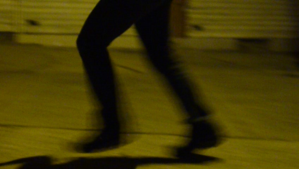
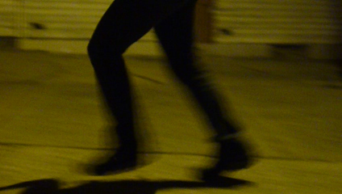

Video performance
Obras realizadas con Acciones perifericas, Colectivo de Performance interdisciplinario que surge en Cali en el 2008, con un enfoque en el arte de accion, en el trabajo colaborativo y en proyectos de intervencion social.
Paseo:
Es una acción que instala el cuerpo en la ciudad a partir de recorrerla, desandando las huellas dejadas por la violencia cotidiana en la urbe caleña. Los cuerpos de los performers en movimiento, van dejando a su paso indicios de un deambular por Cali, y en su recorrido, a la vez producen y capturan las sonoridades que emanan durante el ritual de la carrera; a lo largo de las gruesas arterias de cemento, que conforman el cuerpo de la ciudad. Pisadas, palpitares, respiraciones, voces, ruidos, silencios, alarmas, pitos, susurros y gritos, alimentan el complejo sonoro.
https://www.facebook.com/paseo.accion.transmedial
 

Wampiria: gotico liminal - al margen del amor - erotismo.
Wampiria: Gótico Liminal - Al margen del amor - Erotismo, acción dentro del espacio de la Rave party: 80s versus 90s, teniendo como eje las parafilias. Accion realizada el 25 de Mayo del 2013 entre 12m y 1 am, registro en formato de vídeo.
Wampir 2.
Wampir 2: surge de la investigación durante los tres últimos años en Cali, del interés por la noche, las fiestas, los sitios deshabitados, las formas de asumir la sexualidad, la música, el sonido, la diversión, la dimensión estética del vestir y de estar en el mundo.
Es el movimiento el que deja traslucir el mundo interno de los seres que transitan por el espacio físico, el espacio interior se estira, se contrae, se hace lento, rápido, desenfocado, nítido… hay un juego con penumbras, sombras, transparencias, destellos de luz acompañan el tránsito y la relación de los performers con los objetos, generando tumulto, roce de cuerpos, yuxtaposiciones, desencuentros, encuentros
Quietud:
Es una propuesta de resistencia como ciudadanos, para visibilizar nuestra condición de peatones y transeúntes en el espacio público contiguo a una institución educativa dominado por la velocidad de los carros, obligando a hacer un alto tanto a conductores como a transeúntes y asumiendo que solo cuando se está quieto y en silencio se genera una acción pensante.
Body house:
A partir de una serie de materiales escritos compilados se generan acciones que permiten co-crear con el espacio, el paso del tiempo, la indumentaria, la música, el movimiento, los objetos y la presencia de los performers que confluyen como necesarias para presentar fragmentos de vidas humanas o corporalidades, haciendo uso del collage en el que se mezclan los estilos del arte y el violento desorden de lo estético.
The Rolling:
Es un recorrido por la zona céntrica de la ciudad de Cali, siguiendo a las performers en su deambular en la noche, destacando con el registro las posibilidades de expresión presentes en las urbes contemporáneas como el arte mural, el grafitti y el noise.